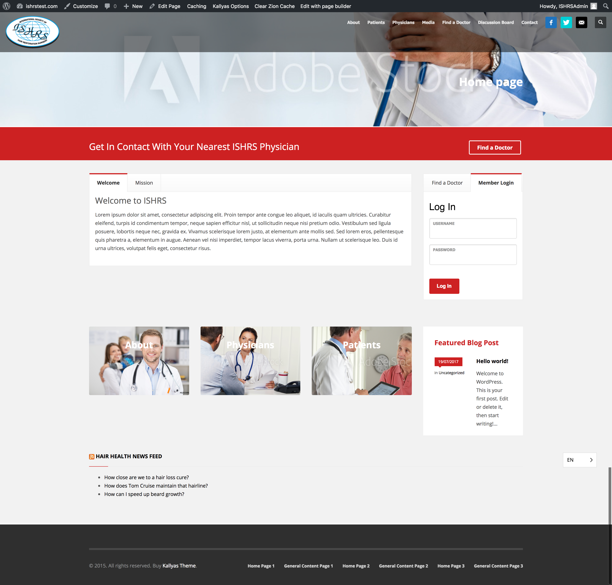
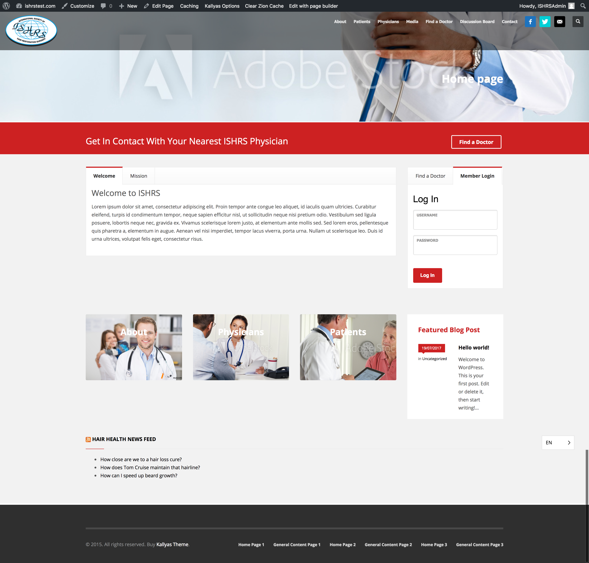
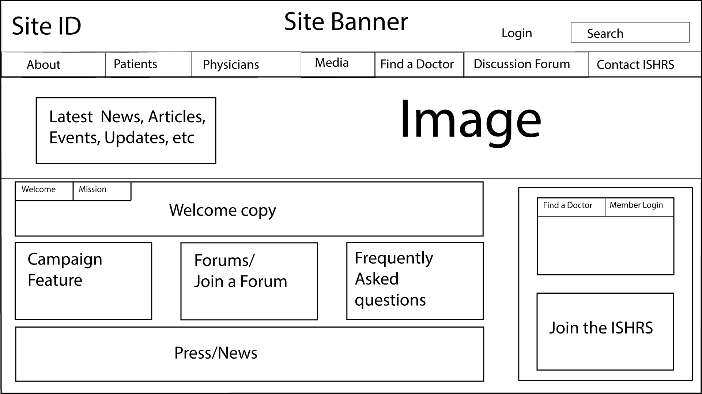
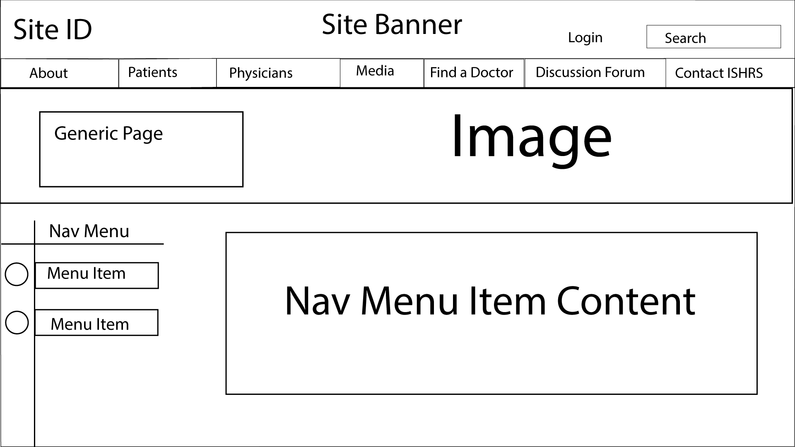

International Society of Hair Restoration Surgeons (ISHRS)
The ISHRS is an organization that helps hair restoration surgeons share
research, resources, and connect with one another, as well a resource for
patients to find information on hair-loss and restoration treatment options.
My job was to create a high fidelity rendering of my designs for the new
website to show to the client.
High Resolution Mockup

ISHRS were satisfied with the mockup I showed them, and ended up using
the design in the final build of the site.
Before I made the mockup I made a couple of prototypes in WordPress,
and made wireframes in Illustrator.
I thought about what patients will want do first and foremost.
I made a Find a Doctor function for users to find the nearest ISHRS doctor,
and consolidated medical facts for women and men.
The user experience I had in mind was one geared towards patients and getting them the correct information.
Health is the most important aspect of life, and finding accurate and truthful information online is less common than it should be.
To have information like this easily available to users presents the ISHRS as an organization with integreity and a focus on
their patients. I wanted to empower and inform people to take control of their health.
WordPress Prototypes
 

Wireframes
 